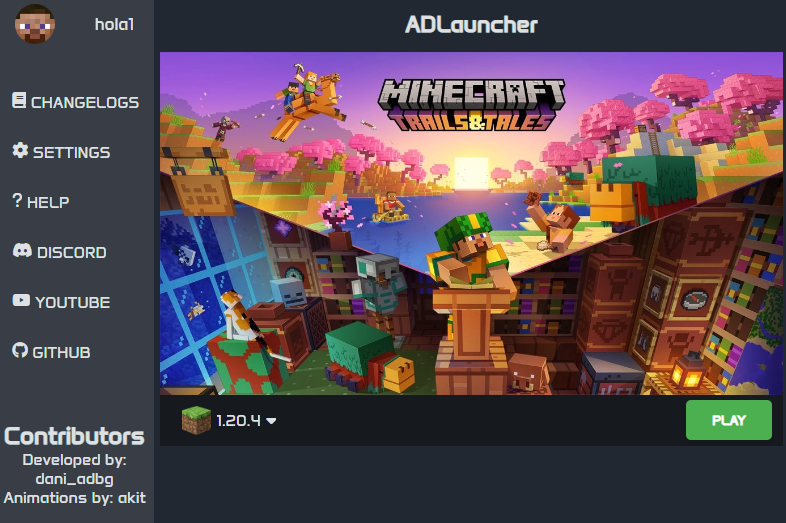

1.0
- Primer lanzamiento del launcher
- Implementado con ADLauncher-core
- Ajustes generales senciollos
- Se estarán implementando cambios conforme pase el tiempo

- Primer lanzamiento del launcher
- Implementado con ADLauncher-core
- Ajustes generales senciollos
- Se estarán implementando cambios conforme pase el tiempo